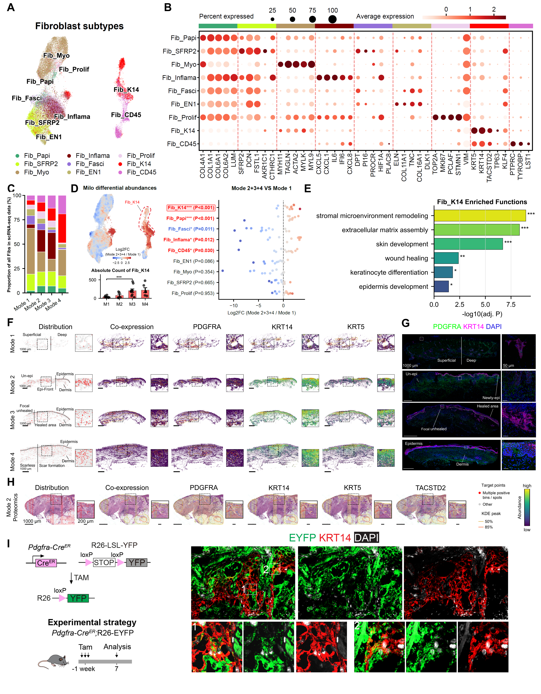

Fibroblast heterogeneity and the epithelial program, with tissue and spatial-protein evidence.
Executed supporting analyses and/or archived sources; see panel-specific status
Source data · Panel manifest · Execution report

| Panel | Description | Status |
|---|---|---|
| 2A | (A) UMAP of nine fibroblast-associated states: Fib_Papi, Fib_SFRP2, Fib_Myo, Fib_Inflama, Fib_Fasci, Fib_EN1, Fib_Prolif, Fib_K14, and Fib_CD45. | partial |
| 2B | (B) Marker-expression dot plot across fibroblast-associated states. Fib_K14 includes expression of epithelial-associated genes KRT5, KRT14, TACSTD2, TP63, and KLF4 in the fibroblast analysis. | not_run |
| 2C | (C) Relative representation of fibroblast-associated states in the scRNA-seq data across repair modes. | not_run |
| 2D | (D) Neighborhood-density proxy, state-wise comparison, and recovered Fib_K14 cell counts for Modes 2–4 versus Mode 1. The proxy uses the normalized 50-nearest-neighbor count ratio described in STAR Methods. The displayed Fib_K14 comparison is P < 0.001. | not_run |
| 2E | (E) Gene Ontology (GO) enrichment of the Fib_K14-associated gene set, including extracellular-matrix, skin-development, wound-response, and epithelial-differentiation terms. The axis reports −log10 adjusted P values. | not_run |
| 2F | (F) Spatial distributions of Fib_K14-associated bins and PDGFRA/KRT14/KRT5 expression across repair modes. Overview scale bars, 1,000 μm. | not_run |
| 2G | (G) Multiplex immunofluorescence for PDGFRA (green), KRT14 (magenta), and DAPI (blue), with magnified co-positive profiles. Overview scale bars, 1,000 μm; inset scale bars, 50 μm. | not_run |
| 2H | (H) Reconstructed spatial-protein maps of KRT14, PDGFRA, KRT5, and TACSTD2, together with the original H&E view and the fixed front ROI. The whole section contains 657 joint-positive grids among 2,029 (32.38%); the ROI contains 72 among 174 (41.38%). Density contours show 50% and 85% enclosed levels. Nominal overview and inset scale bars are 1,000 and 200 micrometers, respectively. | not_run |
| 2I | (I) Pdgfra-CreER;R26-LSL-YFP reporter design and tissue imaging of EYFP (green), KRT14 (red), and DAPI (white), including two magnified regions. | not_run |